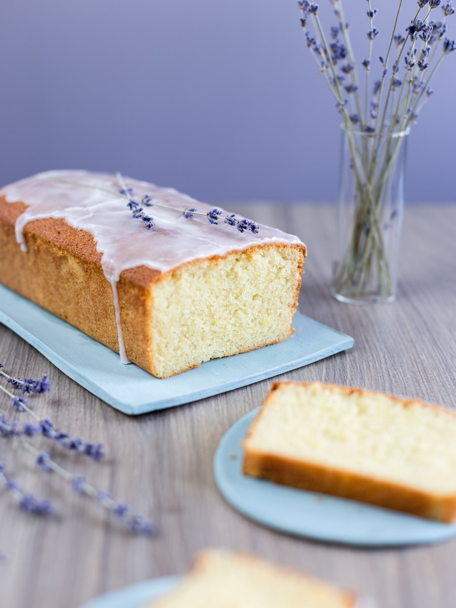

Image courtesy of
Lemon Lavender Loaf Cake
This delicious lemon lavender loaf recipe has been a hit at many family parties. My mother-in-law brought me lavender from a farm she stopped at on vacation
because she loves this loaf so much. The floral notes from the lavender are complimented beautifully by the tart lemon.
Do not skip heating the oil and steeping the lavender. Lavender is fat-soluble, and steeping the lavender in the hot oil will let the lavender flavors
bloom nicely.
Ingredients
Lemon Lavender Loaf Cake
- 300 g all purpose flour
- 300 g sugar
- 2.5 tsp lavender
- 1.5 tsp baking powder
- 0.5 tsp salt
- 2 lemons (zest and juice)
- 3/4 c vegetable oil
- 3 eggs
- 0.5 tsp vanilla
- 0.25 tsp lemon extract
- 3/4 c plain full-fat yogurt
Lavender glaze
- 150 g confectioners sugar
- 3 Tbsp lemon juice
- 0.5 Tbsp vegetable oil
- 0.25 tsp vanilla
- 1.5 tsp ground lavender
- 1 pinch salt
Steps
- Preheat oven to 350 F.
- Grease and flour 9x5 loaf pan
- Heat oil in sauce pan on medium-high heat for 1-2 mins. Add the lavender and remove the oil from heat. Let the lavender steep for at least 30 minutes.
- In a small bowl, whisk together the flour, baking powder and salt.
- In a medium bowl, mix the sugar and lemon zest until the sugar is pale yellow and uniform.
- Beat the eggs, vanilla, sugar and lemon zest with a paddle attachment for 3-4 minutes or until it is tripled in size and fluffy.
- Slowly drizzle in the oil and then beat for 1-2 more minutes.
- Fold in dry ingredients.
- Add to loaf pan and bake for 60-70 minutes
- Combine all glaze ingredients in a small bowl and whisk for 1-2 minutes.
- Let the loaf cool off for about 30 minutes, or until it is room temperature. Drizzle the glaze over the top.